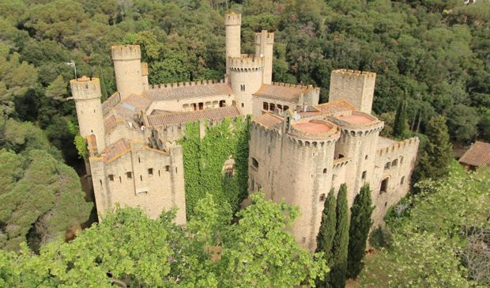

ALMERIA:Torre de Mesa Roldán
 Está situada en el Parque Natural de Cabo de Gata, entre Agua Amarga y la playa de los
Muertos. La reconocerás porque, además de haber sido sobrevolada por los dragones, aquí es
donde Daenerys tiene la conversación con los amos de Meereen antes del comienzo de la
batalla.
La torre de Mesa Roldán fue levantada en 1766 para vigilar la costa de los piratas
beberiscos.
Está situada en el Parque Natural de Cabo de Gata, entre Agua Amarga y la playa de los
Muertos. La reconocerás porque, además de haber sido sobrevolada por los dragones, aquí es
donde Daenerys tiene la conversación con los amos de Meereen antes del comienzo de la
batalla.
La torre de Mesa Roldán fue levantada en 1766 para vigilar la costa de los piratas
beberiscos.
BARCELONA:Santa Florentina

Situado en Canet de Mar, en Barcelona, el hermoso castillo de Santa Florentina fue el lugar
escogido por los creadores de Juego de Tronos para ubicar Colina del Cuervo. Se levantó en
el siglo XI sobre una antigua villa de la época romana. Pese a su cercanía, muchos
habitantes de la ciudad condal desconocen su existencia.
CACERES:Castillo de Trujillo
El castillo de Trujillo ha protagonizado, el capítulo final de la séptima temporada de Juego
de Tronos. El episodio arranca en el castillo, donde ondea la bandera de los Lannister.
Jaime Lannister y Bronn, observan desde las almenas de la fortaleza a los ejércitos. Así,
Trujillo se convierte en una de los castillos defensivos de Desembarco del Rey.
CASTELLON:Peñiscola
Esta ciudad amurallada sobre el Mediterráneo ha sido una de las tres únicas ciudades del
mundo donde residió un Papa.
En total, son cinco las ubicaciones donde se rodó parte de la serie. Uno de ellos es el
parque de la Artillería, por donde bajan Tyrion, Missandei y Gusano Gris sobre el futuro de
la ciudad libre de Meereen.
CORDOBA:Puente Romano
El Puente Romano de Córdoba ha aparecido de nuevo en la popular serie de Juego de Tronos. Un
vez más este emblema cordobés se ha transfigurado, por obra de los efectos especiales, en el
Puente Largo que une las dos áreas de la ciudad libre de Volantis a través del Rhoyne.
GIRONA:Catedral
Girona es una de las ciudades que más se repiten en la sexta temporada de Juego de
Tronos.Aquí es donde se ubicó Braavos.
Si te acercas hasta la calle del Bisbe Josep Cartaña, cerca de la catedral, encontrarás las
escaleras donde Arya se sentó estando ciega y se puso a pedir.
GUADALAJARA:Castillo de Zafra
El Castillo de Zafra es una impresionante fortaleza situada en el municipio de Campillo de
Dueñas, en Guadalajara, Castilla-La Mancha. Data del siglo XII y destaca por estar
construida encima de una gran roca con una torre en el punto más alto.
NAVARRA:Bardenas Reales
El Parque Natural de las Bardenas Reales, en Navarra, es excepcional. No conoce el término
medio ni preciso entre vegetación y desierto. El paisajes es alucinante. Es también Reserva
de la Biosfera de la Unesco y comprende dos Zonas de Especial Protección para las Aves
(ZEPA).
VIZCAYA:San Juan de Gaztelugatxe
San Juan de Gaztelugatxe es de esos lugares únicos en el mundo. El nombre viene de la emita
que hay en lo alto de este islote. Para unir esta pequeña isla a tierra firme se construyó
un puente de piedra con 241 escaleras.
San Juan de Gaztelugatxe y GOT van de la mano. Este lugar ha sido uno de los escogidos para
recrear Rocadragón. La casa tradicional de los Targaryen que acaba de recuperar Daenerys.
SEVILLA:Real Alcazar
En Sevilla capital se utilizó el Real Alcázar para dar vida al reino de Dorne, reino bajo el
poder de la familia Martell. Esta familia ha tomado un papel protagónico en las últimas
temporadas de la serie, y principalmente el príncipe Oberyn Martell o Víbora roja, que fue
protagonista del último capítulo de la cuarta temporada cuando murió a manos de la “La
Montaña”.